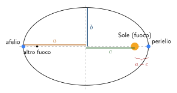
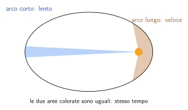
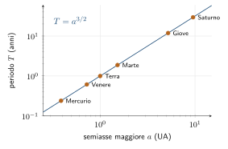
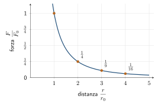
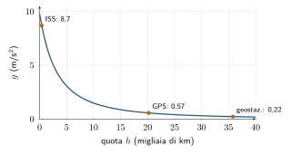

- enunciare le tre leggi di Keplero e usare \(T^2/a^3=\text{costante}\);
- usare la legge di gravitazione universale \(F=G\,m_1m_2/r^2\);
- ricavare l’accelerazione di gravità \(g=GM/R^2\) e usarla per calcolare la massa di un pianeta.
1Chi gira attorno a chi?
Guardando il cielo di notte, le stelle ruotano tutte insieme, come se fossero attaccate a una grande sfera. Alcuni puntini luminosi però si comportano in modo strano: si spostano rispetto alle stelle e ogni tanto tornano indietro per qualche settimana. I Greci li chiamavano pianeti, cioè “stelle erranti”. Questo ritorno all’indietro si chiama moto retrogrado.
- Modello tolemaico (II secolo d.C.): la Terra è ferma al centro e tutto le gira attorno su cerchi. Per spiegare il moto retrogrado Tolomeo fa girare ogni pianeta su un cerchio piccolo (epiciclo), il cui centro gira su un cerchio grande. Le previsioni funzionano, ma il sistema è pieno di aggiustamenti.
- Modello copernicano (1543): al centro c’è il Sole, e la Terra è un pianeta come gli altri. Il moto retrogrado diventa semplice: la Terra, più interna e più veloce, “sorpassa” Marte.
- Keplero (inizio Seicento), studiando le misure precisissime di Tycho Brahe su Marte, scopre che le orbite non sono cerchi ma ellissi.
- Galileo (1610), col cannocchiale, vede quattro lune che girano attorno a Giove: non tutto gira attorno alla Terra.
Sei in autostrada a 130 km/h e sorpassi un camion che va a 90. Se guardi il camion rispetto alle montagne lontane, ti sembra che vada all’indietro, anche se in realtà va avanti. Marte fa lo stesso quando la Terra lo sorpassa: ecco il moto retrogrado.
2Le tre leggi di Keplero
Le leggi di Keplero sono descrittive: dicono come si muovono i pianeti, non perché. Il perché lo darà Newton.
Prima legge: la forma dell’orbita
I pianeti si muovono su orbite ellittiche, e il Sole occupa uno dei due fuochi.

L’ellisse è l’insieme dei punti per cui la somma delle distanze dai due fuochi è costante (e vale \(2a\)). Si può disegnare con due chiodi, un filo e una matita: i chiodi sono i fuochi, il filo è lungo \(2a\).
- semiasse maggiore \(a\): metà dell’asse lungo, è la “distanza media” dal Sole;
- semiasse minore \(b\) e semidistanza focale \(c\) (centro–fuoco), legati da \(b^2=a^2-c^2\);
- eccentricità \(e=c/a\), tra 0 e 1: dice quanto l’ellisse è schiacciata. Con \(e=0\) i fuochi coincidono e hai una circonferenza;
- perielio (punto più vicino al Sole) a distanza \(a-c\); afelio (più lontano) a distanza \(a+c\). Quindi \(a=\dfrac{r_\text{per}+r_\text{af}}{2}\).
L’orbita della Terra ha \(e=0{,}017\): è quasi un cerchio. Le comete arrivano a \(e=0{,}99\).
Seconda legge: la velocità lungo l’orbita
Il segmento che unisce il Sole al pianeta (raggio vettore) spazza aree uguali in tempi uguali.

Immagina il raggio vettore come una lancetta che “dipinge” il piano mentre gira, e che in un mese dipinge sempre la stessa area. Vicino al Sole la lancetta è corta, e per dipingere la stessa area deve muoversi più in fretta. Lontano è lunga, e basta muoversi piano. Vicino al Sole il pianeta è veloce, lontano è lento.
Al perielio e all’afelio la velocità è perpendicolare al raggio. In un tempo breve \(\Delta t\) lo spicchio spazzato è quasi un triangolo, con base \(v\,\Delta t\) e altezza \(r\), quindi area \(A=\tfrac12\,r\,v\,\Delta t\). Imponendo aree uguali negli stessi tempi:
Terza legge: distanza e durata dell’anno
Il quadrato del periodo diviso il cubo del semiasse maggiore è uguale per tutti i corpi che girano attorno allo stesso centro.
| Pianeta | \(a\) (UA) | \(T\) (anni) | \(a^3\) | \(T^2\) |
|---|---|---|---|---|
| Mercurio | 0,387 | 0,241 | 0,058 | 0,058 |
| Venere | 0,723 | 0,615 | 0,378 | 0,378 |
| Terra | 1 | 1 | 1 | 1 |
| Marte | 1,524 | 1,881 | 3,54 | 3,54 |
| Giove | 5,203 | 11,86 | 140,9 | 140,7 |
| Saturno | 9,537 | 29,45 | 867,4 | 867,3 |

\(x^{3/2}=\sqrt{x^3}=x\sqrt{x}\) e \(x^{2/3}=\sqrt[3]{x^2}\). Sono una l’inversa dell’altra: se \(T=a^{3/2}\) allora \(a=T^{2/3}\).
Esempi a mente: \(4^{3/2}=\sqrt{64}=8\); \(8^{2/3}=\sqrt[3]{64}=4\); \(9^{3/2}=27\). Sulla calcolatrice usa il tasto \(x^y\) con l’esponente tra parentesi: 29.46^(2/3).
Marte impiega 1,88 anni terrestri per un giro attorno al Sole. Quanto vale il suo semiasse in UA?
Usando la Terra come riferimento (1 anno, 1 UA) la terza legge diventa \(T^2=a^3\): \[ a=T^{2/3}=1{,}88^{2/3}=\sqrt[3]{1{,}88^2}=\sqrt[3]{3{,}53}=1{,}52\ \text{UA} \]
- La costante \(K\) cambia se cambia il corpo centrale. Le lune di Giove hanno una \(K\) diversa dai pianeti attorno al Sole: non puoi mettere la Luna e Marte nella stessa proporzione.
- In un rapporto \(T_1^2/a_1^3=T_2^2/a_2^3\) le unità non vanno convertite, basta che siano le stesse per i due corpi (giorni con giorni, km con km).
Un pianeta è 4 volte più lontano dal Sole della Terra. Il suo anno dura 4 anni?
Risposta
No: \(T=4^{3/2}=8\) anni. Più lontano vuol dire un giro più lungo e una velocità minore.3Newton: la legge di gravitazione universale
Il ragionamento di Newton parte da cose che conosci già.
- Principio d’inerzia: senza forze un corpo va dritto a velocità costante. Se nessuno tirasse la Luna, se ne andrebbe in linea retta.
- La Luna invece gira in cerchio, quindi serve una forza centripeta diretta verso il centro, come il filo che tiene un sasso che fai roteare.
- L’idea geniale: a fare da “filo” è la stessa forza che fa cadere una mela. La gravità vale ovunque nell’universo.
La Luna sta cadendo verso la Terra, continuamente. Ma intanto va così veloce di lato che, mentre cade, la superficie della Terra “curva via” sotto di lei. Cade per sempre senza mai arrivare: questo è un’orbita.
La Luna dista \(R_L=3{,}84\cdot10^8\) m dalla Terra e compie un giro in \(T=27{,}3\) d \(=2{,}36\cdot10^6\) s. Confrontiamo la sua accelerazione centripeta con \(g\).
- \(a_c=\dfrac{4\pi^2R_L}{T^2}=\dfrac{4\pi^2\cdot3{,}84\cdot10^8}{(2{,}36\cdot10^6)^2}=2{,}72\cdot10^{-3}\) m/s².
- \(\dfrac{a_c}{g}=\dfrac{2{,}72\cdot10^{-3}}{9{,}81}\approx\dfrac{1}{3600}=\dfrac{1}{60^2}\).
- La Luna dista circa \(60\) raggi terrestri dal centro della Terra. Distanza 60 volte, accelerazione \(60^2\) volte più piccola: la forza va come \(1/r^2\).
La forza è attrattiva, diretta lungo la congiungente dei centri. Le due forze sono uguali e opposte (terzo principio). Vale per masse puntiformi e per sfere omogenee, con \(r\) distanza tra i centri.
Leggiamo la formula pezzo per pezzo:
- \(m_1m_2\) al numeratore: raddoppi una massa e la forza raddoppia; raddoppi entrambe e quadruplica.
- \(r^2\) al denominatore (“inverso del quadrato”): distanza doppia, forza 4 volte più piccola; tripla, 9 volte.
- \(G\) piccolissima: tra oggetti di tutti i giorni la gravità non si sente. Diventa importante solo se almeno una massa è enorme.

Se \(F\propto 1/r^2\), per sapere come cambia \(F\) basta il rapporto: \(\dfrac{F_2}{F_1}=\left(\dfrac{r_1}{r_2}\right)^2\). Non servono né \(G\) né le masse.
Con le potenze di 10: \(10^a\cdot10^b=10^{a+b}\), \(\dfrac{10^a}{10^b}=10^{a-b}\), \((10^a)^2=10^{2a}\). Per esempio \((3{,}84\cdot10^8)^2=14{,}7\cdot10^{16}=1{,}47\cdot10^{17}\).
Due palline di massa 0,50 kg e 1,2 kg si trovano a 0,40 m di distanza.
\[ F=6{,}67\cdot10^{-11}\cdot\frac{0{,}50\cdot1{,}2}{0{,}40^2}=2{,}5\cdot10^{-10}\ \text{N} \]Miliardi di volte meno di 1 N: la gravità tra oggetti comuni è debolissima.
La Terra ti attira con una forza di 600 N. Con quanta forza tu attiri la Terra?
Risposta
600 N, per il terzo principio. Ma la massa della Terra è enorme, quindi la sua accelerazione \(a=F/M\) è praticamente zero.4L’accelerazione di gravità e la massa della Terra
Il peso di un corpo sulla superficie si scrive in due modi: \(P=mg\) e \(P=G\,M_Tm/R_T^2\). Uguagliando, la massa \(m\) si semplifica:
\(g\) non dipende dalla massa del corpo che cade. Ad altezza \(h\) la distanza dal centro è \(R+h\).
Perché un martello e una piuma, senza aria, cadono insieme? Il martello è tirato con una forza più grande, ma è anche più difficile da mettere in moto. I due effetti si compensano esattamente. Gli astronauti dell’Apollo 15 lo hanno provato sulla Luna.

Come si “pesa” la Terra. Nella formula \(g=GM_T/R_T^2\) conosciamo \(g\) (si misura con un pendolo) e \(R_T\). Manca \(G\), che è difficile da misurare perché tra oggetti da laboratorio la forza è minuscola. Ci riesce Cavendish nel 1798 con una bilancia di torsione: un manubrio appeso a un filo sottilissimo che si torce quando due grosse sfere di piombo attirano le sue palline. Noto \(G\):
\[ M_T=\frac{g\,R_T^2}{G}=\frac{9{,}81\cdot(6{,}37\cdot10^6)^2}{6{,}67\cdot10^{-11}}=5{,}97\cdot10^{24}\ \text{kg} \]Dividendo la massa per il volume si trova la densità media della Terra: circa 5,5 g/cm³. Le rocce in superficie arrivano a 2,7 g/cm³, quindi all’interno c’è qualcosa di molto più denso: il nucleo di ferro e nichel.
Giove ha massa 318 volte quella della Terra e raggio 11,0 volte maggiore. Quanto vale \(g\) su Giove?
\[ \frac{g_G}{g_T}=\frac{M_G/M_T}{(R_G/R_T)^2}=\frac{318}{11{,}0^2}=2{,}63\quad\Rightarrow\quad g_G=2{,}63\cdot9{,}81=25{,}8\ \text{m/s}^2 \]Niente \(G\), niente potenze di 10.
- La distanza nella formula è dal centro: ad altezza \(h\) usa \(r=R+h\), non \(h\).
- Se il testo ti dà il diametro, dividilo per 2.
- Converti km in m prima di usare \(G\).
5Esercizi
I pallini indicano la difficoltà. Per ogni esercizio puoi vedere prima solo il risultato, per controllare il tuo, e poi la soluzione svolta. Dati che servono spesso: \(G=6{,}67\cdot10^{-11}\ \mathrm{N\,m^2/kg^2}\), \(M_T=5{,}97\cdot10^{24}\) kg, \(R_T=6{,}37\cdot10^6\) m, \(g=9{,}81\) m/s², 1 UA \(=1{,}50\cdot10^{11}\) m (tutti nel formulario).
Un pianeta impiega 27 anni terrestri per compiere un giro attorno al Sole.
- Quanto dista dal Sole, rispetto alla distanza Terra–Sole?
Risultato
\(a=9\) UA, cioè 9 volte la distanza Terra–Sole.Soluzione svolta
- Con la Terra come riferimento (anni e UA) la terza legge diventa \(T^2=a^3\).
- \(a^3=27^2=729\Rightarrow a=\sqrt[3]{729}=9\) UA.
In alternativa: \(a=T^{2/3}=27^{2/3}=(\sqrt[3]{27})^2=3^2=9\).
Il pianeta nano Cerere orbita nella fascia degli asteroidi, con semiasse maggiore di 2,77 UA.
- Quanto dura un anno su Cerere?
Risultato
\(T=4{,}61\) anni.Soluzione svolta
- \(T^2=a^3\) (anni, UA), quindi \(T=a^{3/2}\).
- \(T=2{,}77^{3/2}=2{,}77\cdot\sqrt{2{,}77}=2{,}77\cdot1{,}664=4{,}61\) anni.
Io, una luna di Giove, ha un’orbita di raggio \(4{,}22\cdot10^5\) km e un periodo di 1,77 giorni. Europa, un’altra luna di Giove, ha un periodo di 3,55 giorni.
- Calcola il raggio dell’orbita di Europa.
- Potresti usare la Terra come riferimento, come negli esercizi precedenti?
Risultato
\(r_E=6{,}71\cdot10^5\) km. No, la Terra non gira attorno a Giove.Soluzione svolta
- Io ed Europa girano attorno allo stesso corpo, quindi \(\dfrac{T_I^2}{r_I^3}=\dfrac{T_E^2}{r_E^3}\).
- \(r_E=r_I\left(\dfrac{T_E}{T_I}\right)^{2/3}=4{,}22\cdot10^5\cdot\left(\dfrac{3{,}55}{1{,}77}\right)^{2/3}\).
- \(3{,}55/1{,}77=2{,}006\); \(2{,}006^{2/3}=1{,}590\).
- \(r_E=4{,}22\cdot10^5\cdot1{,}590=6{,}71\cdot10^5\) km.
Giorni e km non vanno convertiti: si semplificano nel rapporto. La costante \(K\) delle lune di Giove è diversa da quella dei pianeti attorno al Sole, quindi la Terra non c’entra.
Una cometa passa al perielio a 0,59 UA dal Sole e all’afelio arriva a 35,1 UA.
- Calcola il semiasse maggiore e l’eccentricità dell’orbita.
- Ogni quanti anni la cometa torna vicino al Sole?
Risultato
\(a=17{,}8\) UA; \(e=0{,}967\); \(T=75{,}4\) anni.Soluzione svolta
- L’asse maggiore è la somma delle due distanze: \(a=\dfrac{0{,}59+35{,}1}{2}=17{,}85\) UA.
- Il perielio è a \(a-c\), quindi \(c=a-r_\text{per}=17{,}85-0{,}59=17{,}26\) UA.
- \(e=c/a=17{,}26/17{,}85=0{,}967\): un’orbita molto allungata.
- Terza legge con la Terra come riferimento: \(T=a^{3/2}=17{,}85^{3/2}=75{,}4\) anni.
La cometa dell’esercizio precedente al perielio si trova a \(8{,}8\cdot10^{10}\) m dal Sole e viaggia a 54,5 km/s. All’afelio dista \(5{,}25\cdot10^{12}\) m.
- Con che velocità si muove all’afelio?
Risultato
\(v_\text{af}=914\) m/s, circa 60 volte più lenta che al perielio.Soluzione svolta
- Seconda legge di Keplero al perielio e all’afelio: \(r_\text{per}v_\text{per}=r_\text{af}v_\text{af}\).
- \(v_\text{af}=v_\text{per}\dfrac{r_\text{per}}{r_\text{af}}=54{,}5\cdot10^3\cdot\dfrac{8{,}8\cdot10^{10}}{5{,}25\cdot10^{12}}\).
- \(v_\text{af}=54{,}5\cdot10^3\cdot0{,}01676=914\) m/s.
Due automobili di massa 1500 kg e 1200 kg sono parcheggiate con i baricentri a 3,0 m di distanza.
- Quanto vale la forza gravitazionale tra le due auto?
- Confrontala con il peso di una zanzara (circa \(2\cdot10^{-5}\) N).
Risultato
\(F=1{,}3\cdot10^{-5}\) N, meno del peso di una zanzara.Soluzione svolta
- \(F=G\dfrac{m_1m_2}{r^2}=6{,}67\cdot10^{-11}\cdot\dfrac{1500\cdot1200}{3{,}0^2}\).
- \(=6{,}67\cdot10^{-11}\cdot\dfrac{1{,}8\cdot10^6}{9{,}0}=6{,}67\cdot10^{-11}\cdot2{,}0\cdot10^5=1{,}3\cdot10^{-5}\) N.
Per questo non vediamo le auto parcheggiate avvicinarsi: l’attrito con l’asfalto è milioni di volte più grande.
Due corpi si attraggono con una forza \(F\). Raddoppi la massa di uno dei due e triplichi la distanza tra i centri.
- Quanto vale la nuova forza, in funzione di \(F\)?
Risultato
\(F'=\dfrac29F\approx0{,}22\,F\).Soluzione svolta
- \(F'=G\dfrac{(2m_1)\,m_2}{(3r)^2}=\dfrac{2}{9}\,G\dfrac{m_1m_2}{r^2}=\dfrac29F\).
Il fattore 2 della massa non basta a compensare il fattore 9 della distanza al quadrato.
La Terra (\(5{,}97\cdot10^{24}\) kg) dista in media \(1{,}50\cdot10^{11}\) m dal Sole (\(1{,}99\cdot10^{30}\) kg).
- Calcola la forza con cui il Sole attira la Terra.
Risultato
\(F=3{,}52\cdot10^{22}\) N.Soluzione svolta
- \(F=6{,}67\cdot10^{-11}\cdot\dfrac{1{,}99\cdot10^{30}\cdot5{,}97\cdot10^{24}}{(1{,}50\cdot10^{11})^2}\).
- Numeratore: \(6{,}67\cdot1{,}99\cdot5{,}97\cdot10^{-11+30+24}=79{,}2\cdot10^{43}\). Denominatore: \(2{,}25\cdot10^{22}\).
- \(F=\dfrac{7{,}92\cdot10^{44}}{2{,}25\cdot10^{22}}=3{,}52\cdot10^{22}\) N.
Marte ha una massa pari a 0,107 volte quella terrestre e un raggio pari a 0,532 volte quello terrestre.
- Quanto vale l’accelerazione di gravità sulla superficie di Marte?
- Quanto pesa su Marte una persona di 60 kg?
Risultato
\(g_M=3{,}71\) m/s²; peso 223 N.Soluzione svolta
- Metodo dei rapporti: \(\dfrac{g_M}{g_T}=\dfrac{M_M/M_T}{(R_M/R_T)^2}=\dfrac{0{,}107}{0{,}532^2}=\dfrac{0{,}107}{0{,}283}=0{,}378\).
- \(g_M=0{,}378\cdot9{,}81=3{,}71\) m/s².
- \(P=mg_M=60\cdot3{,}71=223\) N (sulla Terra sarebbero 589 N).
A che altezza dalla superficie terrestre l’accelerazione di gravità vale la metà di quella al suolo?
Risultato
\(h=(\sqrt2-1)R_T=2{,}64\cdot10^3\) km.Soluzione svolta
- \(\dfrac{g(h)}{g_0}=\left(\dfrac{R_T}{R_T+h}\right)^2=\dfrac12\).
- Radice quadrata: \(\dfrac{R_T+h}{R_T}=\sqrt2\Rightarrow h=(\sqrt2-1)R_T\).
- \(h=0{,}414\cdot6370\) km \(=2{,}64\cdot10^3\) km.
Prendere la radice subito evita un’equazione di secondo grado.
Sulla superficie di Venere, che ha raggio \(6{,}05\cdot10^6\) m, l’accelerazione di gravità vale 8,87 m/s².
- Calcola la massa di Venere.
Risultato
\(M_V=4{,}87\cdot10^{24}\) kg.Soluzione svolta
- Da \(g=GM/R^2\) si ricava \(M=\dfrac{gR^2}{G}\).
- \(M=\dfrac{8{,}87\cdot(6{,}05\cdot10^6)^2}{6{,}67\cdot10^{-11}}=\dfrac{8{,}87\cdot3{,}66\cdot10^{13}}{6{,}67\cdot10^{-11}}=4{,}87\cdot10^{24}\) kg.
È l’82% della massa della Terra.
Considera la Terra come una sfera di raggio \(6{,}37\cdot10^6\) m e massa \(5{,}97\cdot10^{24}\) kg.
- Calcola la sua densità media.
- Il granito ha densità \(2{,}7\cdot10^3\) kg/m³. Che cosa puoi dire dell’interno della Terra?
Risultato
\(d=5{,}51\cdot10^3\) kg/m³, il doppio delle rocce di superficie: dentro c’è materiale più denso.Soluzione svolta
- Volume della sfera: \(V=\tfrac43\pi R^3=\tfrac43\pi(6{,}37\cdot10^6)^3=1{,}08\cdot10^{21}\) m³.
- \(d=\dfrac{M}{V}=\dfrac{5{,}97\cdot10^{24}}{1{,}08\cdot10^{21}}=5{,}51\cdot10^3\) kg/m³.
- La media è il doppio delle rocce in superficie, quindi all’interno deve esserci materiale molto più denso (il nucleo di ferro).
Un astronauta di 70 kg cammina sulla Luna (\(M_L=7{,}35\cdot10^{22}\) kg, \(R_L=1{,}74\cdot10^6\) m).
- Quanto vale \(g\) sulla Luna?
- Con che forza la Luna attira l’astronauta?
Risultato
\(g_L=1{,}62\) m/s²; \(F=113\) N.Soluzione svolta
- \(g_L=\dfrac{GM_L}{R_L^2}=\dfrac{6{,}67\cdot10^{-11}\cdot7{,}35\cdot10^{22}}{(1{,}74\cdot10^6)^2}=\dfrac{4{,}90\cdot10^{12}}{3{,}03\cdot10^{12}}=1{,}62\) m/s².
- \(F=mg_L=70\cdot1{,}62=113\) N, circa un sesto del peso sulla Terra (687 N).
Un satellite di 850 kg orbita a 500 km dalla superficie terrestre.
- Con che forza la Terra lo attira?
- Che errore faresti usando \(h\) al posto di \(r\)?
Risultato
\(F=7{,}17\cdot10^3\) N. Usando \(h\) otterresti una forza circa 190 volte troppo grande.Soluzione svolta
- \(r=R_T+h=6{,}37\cdot10^6+0{,}50\cdot10^6=6{,}87\cdot10^6\) m.
- \(F=G\dfrac{M_Tm}{r^2}=\dfrac{6{,}67\cdot10^{-11}\cdot5{,}97\cdot10^{24}\cdot850}{(6{,}87\cdot10^6)^2}=\dfrac{3{,}38\cdot10^{17}}{4{,}72\cdot10^{13}}=7{,}17\cdot10^3\) N.
- Con \(h=5{,}0\cdot10^5\) m al denominatore, \((6{,}87/0{,}50)^2\approx189\) volte di più: un risultato assurdo.